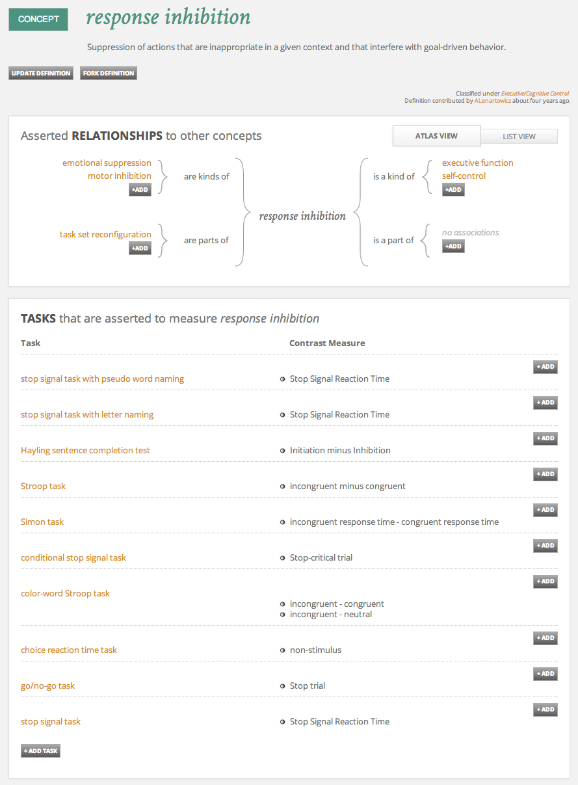
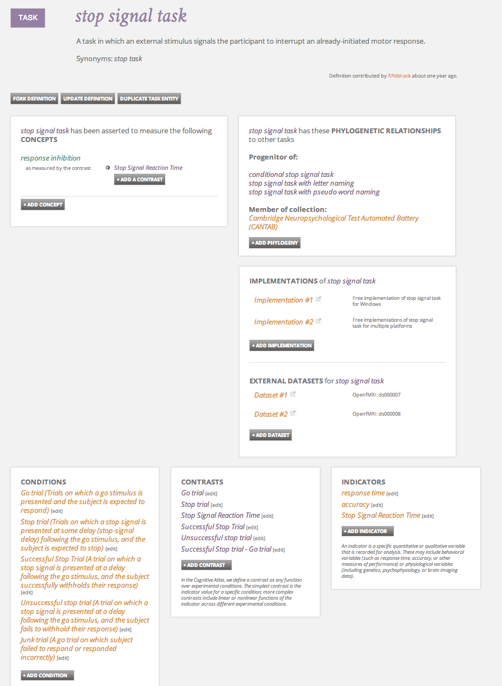
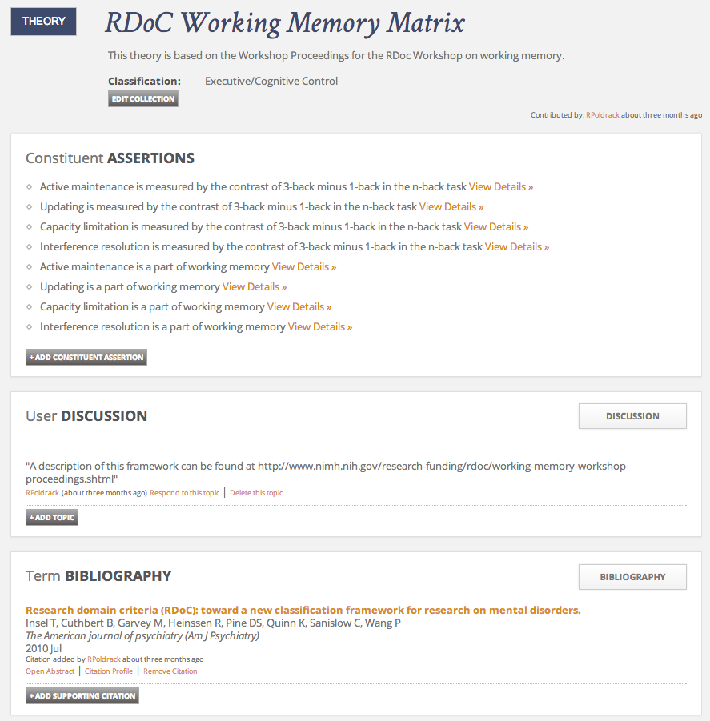

This was originally posted on Blogger here.
The NIHM Director Tom Insel turned a lot of heads recently with his announcement that NIMH-funded research will no longer focus on DSM-based diagnostic categories, and instead will focus on understanding the dimensions of mental function that underlie mental health disorders and often cut across multiple diagnoses. This new focus will be centered around the Research Domain Criteria (RDoC), which comprises a set of psychological constructs that are thought to represent the most important dimensions that are relevant to mental health disorders. This is great news, as it has become clear (particularly from recent genetic research) that diagnostic categories, while being statistically reliable, do not have a great deal of biological reality. Dr. Insel lays out the problem nicely:
Unlike our definitions of ischemic heart disease, lymphoma, or AIDS, the DSM diagnoses are based on a consensus about clusters of clinical symptoms, not any objective laboratory measure. In the rest of medicine, this would be equivalent to creating diagnostic systems based on the nature of chest pain or the quality of fever. Indeed, symptom-based diagnosis, once common in other areas of medicine, has been largely replaced in the past half century as we have understood that symptoms alone rarely indicate the best choice of treatment.
We have long been interested in this dimensional approach; in particular, it was the basis for the Consortium for Neuropsychiatic Phenomics developed by my colleague Robert Bilder at UCLA several years ago, in which we are examining two specific domains of mental function (memory and executive function) across both healthy individuals and people with several different psychiatric diagnoses (schizophrenia, bipolar disorder, and ADHD). This work is still ongoing but should start to bear fruit in the next year as the neuroimaging and genetic data analyses are completed. It’s great news that more work like this will be funded in the future.
Mining for dimensions
How reliable are the dimensional descriptions?
The move towards RDoC as a basis for mental health research also raises the question of reliability. The strength of the DSM was that its diagnoses were reliable, in the sense that two different psychiatrists, shown the same symptoms, are highly likely to make the same diagnosis. How will we ensure that the mappings from behavior to psychological dimensions are equally reliable? This is a problem that we have long struggled with, and in particular was a driver for the development of our Cognitive Atlas project. This project aims to provide a more formal basis for the many psychological constructs that are used by researchers but rarely defined in an explicit way. It makes a clear distinction between mental concepts (i.e. the unobservable psychological constructs that researchers want to measure) and tasks (i.e., the behavioral tests used to measure to those constructs), and most importantly, provides a way to specify the relations between those two levels. For example, here is the page representing the concept of “response inhibition”:

This page provides a specific definition of the concept along with links to many different tasks that are thought to measure the concept, such as the stop signal task:

Recently we added a new function to the Cognitive Atlas, called Collections. A collection is a set of concepts and relations that together form a larger theoretic framework; it can also be used to identify sets of tasks that are included together in task batteries. We have started to implement the various RDoC frameworks as Collections; for example, the Working Memory Matrix:

There is much more work to do, and we hope that researchers interested in RDoC will help by adding their favorite tasks and concepts to the appropriate matrices. In the long run we are hopeful that formal frameworks like the Cognitive Atlas will come to play the same role for dimensionally-driven research that the DSM has played for diagnosis-driven research, providing a basis for reliable specification of the relations between psychological dimensions and behavioral tasks.
3 comments captured from the original post
Russ Poldrack · 2013-12-01
Sucrelege · 2013-12-01
eat it · 2013-12-05